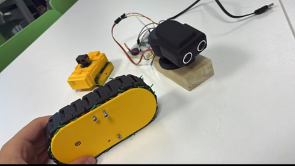
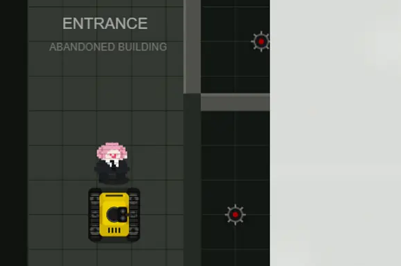

Hello there visitors! This is my personal website, where I share my biography, political views , and projects. Please feel free to explore and reach out if you have any questions or opportunities for collaboration. 🥰
My name is Sami Magali. Growing up in London within a close-knit Arab family, I have spent my life navigating the space between traditional cultural expectations and the vast diversity of a modern city. Experiencing those overlapping worlds, alongside quietly carving out my own identity as a semi-closeted individual, taught me early on not to take existing rules for granted, but to examine how systems work beneath the surface.
That experience directly shaped my core belief in individual liberty and libertarian philosophy. Encouraged by my father to value self-reliance and ambition, I quickly learned that meaningful growth comes from personal responsibility and questioning top-down authority. I am naturally drawn to decentralised ideas, economic freedom, and voluntary cooperation: principles rooted in the idea that individuals, when given autonomy, are best equipped to build their own paths and solve their own problems.
Hand in hand with this worldview is my deep love for engineering. To me, engineering is the ultimate discipline for understanding reality: taking physical, mathematical, and structural principles and using them to construct real-world solutions. Where others see static structures or unchangeable constraints, I see dynamic systems that can be analysed, optimised, and reinvented. I thrive on breaking complex problems down to their fundamental mechanics and figuring out how to make things run cleaner, faster, and more efficiently.
In practice, I have always preferred building and improving structures over simply fitting into them, whether that means turning underused spaces into functional environments, founding projects from the ground up, or helping others navigate complex systems. Driven by an engineer’s problem-solving mindset and a fundamental respect for personal freedom, my goal is always the same: to understand how the world works, question how it is currently run, and build practical ways to make it better.
I am a strong advocate for individual liberty and limited government. I believe that people should be free to make their own choices as long as they are not harming others. I also support free-market economics and the idea that individuals should be able to keep more of what they earn.
🏛️ Political Essays:
🌍 Geopolitical Analyses:
💼 Economic Perspectives:
⛪ Religious Reflections:

